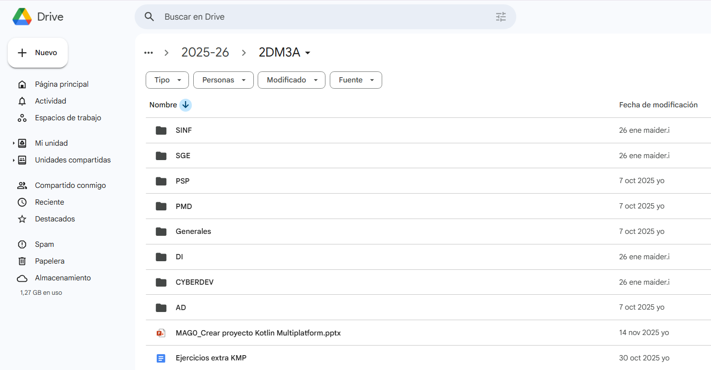
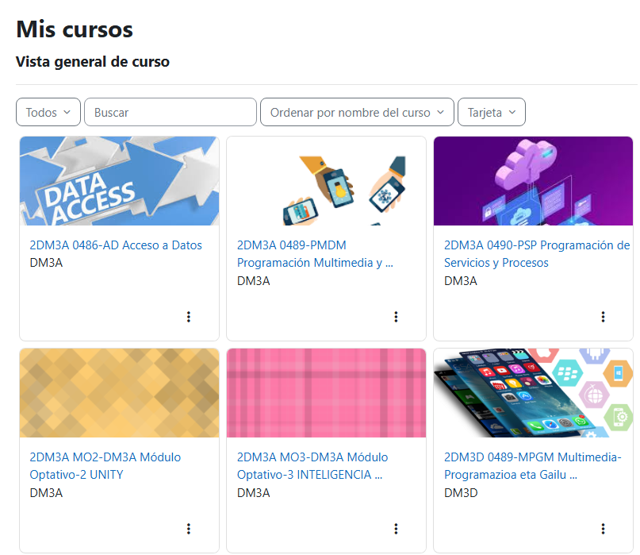

Drive contiene toda la información de nuestro departamento de informática: exámenes, ejercicios lectivos, actas de reunión, cuadernos de evaluación y programaciones[cite: 1]. Todo nuestro trabajo está centralizado en unidades compartidas[cite: 1].
Desde Google Drive no solo damos acceso a multitud de documentos, sino que es un espacio en el que podemos trabajar colaborativamente en tiempo real en la edición de documentos, hojas de cálculo o presentaciones sin necesidad de instalar nada[cite: 1].

Moodle es el espacio donde almacenamos el contenido que usamos para impartir las clases y realizar una evaluación formativa continua, en la que el alumnado recibe retroalimentación constante de sus entregas[cite: 1].
Entre profesores de distintos cursos (por ejemplo DAM en euskera y castellano) nos compartimos el acceso a los cursos para estandarizar los contenidos, lo que resulta especialmente útil cuando la incompatibilidad de horarios dificulta las reuniones presenciales[cite: 1].
